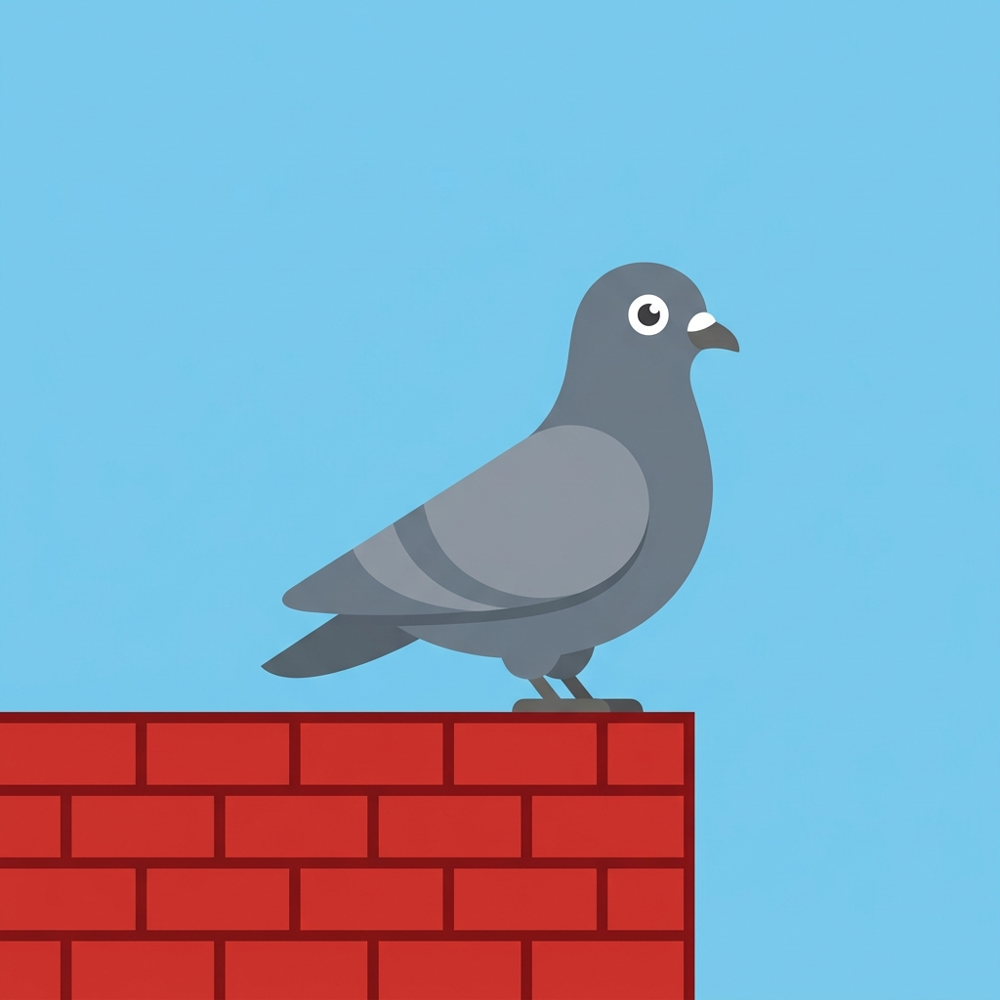

CooLM
A ~42M parameter rooftop pigeon LLM. This page runs in your browser; inference runs on a local Python server (ONNX).
Checking server…
Try asking coo

A ~42M parameter rooftop pigeon LLM. This page runs in your browser; inference runs on a local Python server (ONNX).